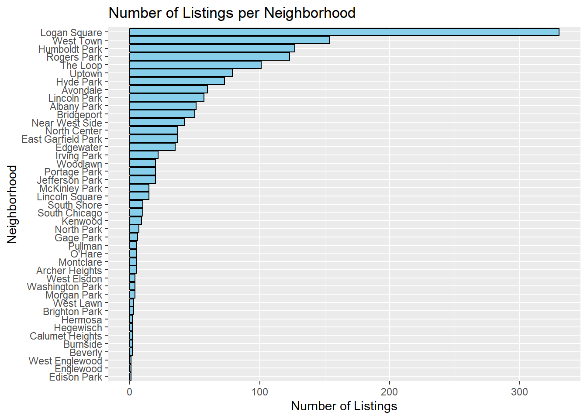
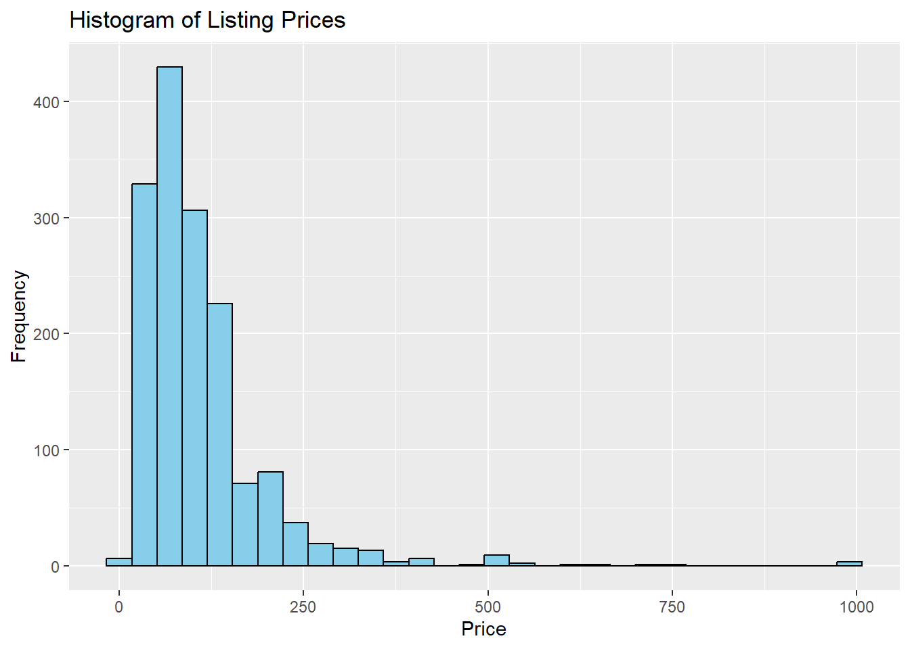
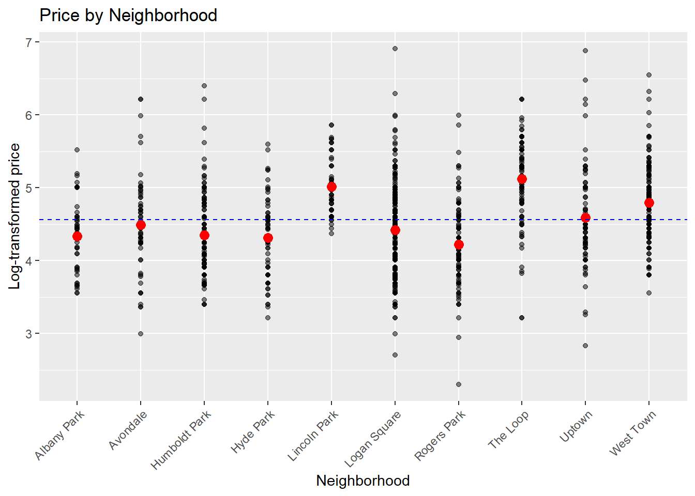

In this lab, we will explore the analysis of multilevel data, focusing on situations where subjects are nested within larger contexts, such as schools, neighborhoods, or clinics. The data include subject-level characteristics (e.g., age, gender), which reflect differences between individuals and help explain variation in their outcomes within a specific context. They also include context-level characteristics (e.g., school funding, neighborhood income), which account for differences between contexts and help explain variation in subject-level outcomes across these contexts.
Chicago AirBnB Data
The Chicago Airbnb dataset was compiled by Trinh and Ameri as part of a course project at St. Olaf College and is included with the book Beyond Multiple Linear Regression by Roback and Legler (2021). It contains information on 1,561 Airbnb listings in Chicago, including details such as nightly price, overall satisfaction rating, number of reviews, and various other listing characteristics. Additionally, the dataset includes neighborhood-level information, such as ratings for walkability, access to public transit, and bikeability, providing valuable context for the listings’ locations.
The dataset is available on Brightspace under the name airbnb.csv. It contains the following variables:
price: the nightly price of the listing (in USD)
overall_satisfaction: the listing’s average rating, on a scale from 1 to 5
reviews: number of user reviews the listing has
room_type: the type of listing (eg: Shared room)
accommodates: number of guests the listing accommodates
bedrooms: the number of bedrooms the listing has
minstay: the minimum number of nights to stay in the listing
neighborhood: the neighborhood in which the listing is located
district: the broader district in which the listing is located
WalkScore: the neighborhood’s rating for walkability (0 - 100)
TransitScore: the neighborhood’s rating for access to public transit (0 - 100)
BikeScore: the neighborhood’s rating for bikeability (0 - 100)
Exploratory Data Analysis
Let’s load the data and use the str() function to inspect the structure of the dataset.
# Load the required librarieslibrary(dplyr)library(ggplot2)library(lmerTest)# Load the Chicago AirBnB data. Note that the call below assumes the csv file is placed in the 'data' folder directly above the root folder of the project. Update the string as needed if the file is located elsewhere.chicago_airbnb <-read.csv("data/airbnb.csv")# Convert all character variables into factorschicago_airbnb <- chicago_airbnb %>%mutate_if(is.character, as.factor)# Inspect the structure of the datasetstr(chicago_airbnb)
This initial inspection makes clear that the Airbnb dataset has a multilevel structure: 1,561 individual listings are nested within 43 neighborhoods, which are further nested within 9 districts. To get a better feeling for this grouping structure, we begin by summarizing the number of listings in each neighborhood:
# Summarize number of listings within each neighborhoodlisting_summary <- chicago_airbnb %>%group_by(neighborhood) %>%summarise(num_listings =n())# Visualize the distribution of listings across neighborhoodsggplot(listing_summary, aes(x =reorder(neighborhood, num_listings), y = num_listings)) +geom_bar(stat ="identity", fill ="skyblue", color ="black") +coord_flip() +labs(title ="Number of Listings per Neighborhood",x ="Neighborhood",y ="Number of Listings")

Explanation:
group_by(neighborhood): groups the data by the neighborhood column so that operations like counting can be applied to each group separately.
After grouping, summarise() calculates the number of rows (listings) in each group (neighborhood) using the n() function. The result is stored in a new data fame with two columns:
neighborhood: the name of the neighborhood;
num_listings: the number of listings in that neighborhood.
Question
What does the plot tell us about the distribution of Airbnb listings across neighborhoods?
Coding excerise
Create a similar plot to visualize the distribution of neighborhoods across districts. Hint: group the dataset by the district column and count the number of unique neighborhoods in each district. See ?summarise for a list of useful functions to use within summarise().
Next, we create a histogram to visualize the distribution of the outcome variable price:
# Create a histogram of priceggplot(chicago_airbnb, aes(x = price)) +geom_histogram(fill ="skyblue", color ="black") +labs(title ="Histogram of Listing Prices",x ="Price",y ="Frequency")

While normality of the outcome is not strictly required for a mixed-effects model, transforming a right-skewed variable like price can help stabilize variance and linearize relationships. We therefore create a new variable, log_price, to store the log-transformed prices:
# Log-transform the price variablechicago_airbnb <- chicago_airbnb %>%mutate(log_price =log(price))
We also want to get a sense of the variability in the listing prices within and between neighborhoods. For this, we are going to select the 10 neighborhoods with the most listings and create a scatter plot with the log-transformed price on the y-axis and the neighborhood on the x-axis:
# Select the top 10 neighborhoods with the most listingstop_neighborhoods <- listing_summary %>%slice_max(num_listings, n =10) %>%pull(neighborhood)# Filter the data to include only the top neighborhoodstop_neighborhood_data <- chicago_airbnb %>%filter(neighborhood %in% top_neighborhoods)
Explanation:
slice_max(num_listings, n = 10): selects the top 10 neighborhoods with the most listings based on the num_listings column.
pull(neighborhood): extracts the neighborhood names from the resulting tibble as a vector.
filter(neighborhood %in% top_neighborhoods): filters the chicago_airbnb dataset to include only rows where the neighborhood column matches one of the neighborhoods in the top_neighborhoods vector.
# Calculate the average log_price for each neighborhoodneighborhood_avg_price <- top_neighborhood_data %>%group_by(neighborhood) %>%summarise(avg_log_price =mean(log_price, na.rm =TRUE))# create a scatter plot of log_price by neighborhoodggplot(top_neighborhood_data, aes(x = neighborhood, y = log_price)) +geom_point(alpha =0.5) +labs(title ="Price by Neighborhood",x ="Neighborhood",y ="Log-transformed price") +theme(axis.text.x =element_text(angle =45, hjust =1)) +geom_point(data = neighborhood_avg_price, aes(x = neighborhood, y = avg_log_price), color ="red", size =3) +# neighborhood-level averages geom_hline(yintercept =mean(neighborhood_avg_price$avg_log_price, na.rm =TRUE), linetype ="dashed", color ="blue") # overall average

Question
What does this plot suggest about the variability in listing prices within and between neighborhoods?
Random intercept model
To model the variability in listing prices within and between neighborhoods, we start by fitting a random intercept model to account for the nesting of listings within neighborhoods, ignoring the higher-level nesting of neighborhoods into districts. The model is specified as follows:
# Fit the random intercept modelrandom_intercept_model <-lmer(log_price ~1+ (1| neighborhood), data = chicago_airbnb)summary(random_intercept_model)
Linear mixed model fit by REML. t-tests use Satterthwaite's method [
lmerModLmerTest]
Formula: log_price ~ 1 + (1 | neighborhood)
Data: chicago_airbnb
REML criterion at convergence: 2702.2
Scaled residuals:
Min 1Q Median 3Q Max
-3.4477 -0.6769 -0.0305 0.6368 4.4657
Random effects:
Groups Name Variance Std.Dev.
neighborhood (Intercept) 0.1667 0.4083
Residual 0.3109 0.5576
Number of obs: 1561, groups: neighborhood, 43
Fixed effects:
Estimate Std. Error df t value Pr(>|t|)
(Intercept) 4.29523 0.07013 34.68681 61.25 <2e-16 ***
---
Signif. codes: 0 '***' 0.001 '**' 0.01 '*' 0.05 '.' 0.1 ' ' 1
Question
Based on the estimated variance components, what can you conclude about the relative contributions of within-neighborhood and between-neighborhood variability to the total variability in listing prices?
Extending the random intercept model with subject-level variables
As a second step, we extend the random intercept model with subject-level variables. To facilitate the interpretation of the model coefficients, we start by setting the coding scheme for categorical variables to effects coding. We also center the numerical variables by subtracting the mean value from each observation. This step is important to reduce multicollinearity, improve numerical stability, and make the coefficients more interpretable.
# Use effects coding for the categorical variablesoptions(contrasts =c("contr.sum", "contr.poly"))# Center the continuous subject-levl variableschicago_airbnb <- chicago_airbnb %>%mutate(overall_satisfaction_c =scale(overall_satisfaction, scale =FALSE),accommodates_c =scale(accommodates, scale =FALSE),bedrooms_c =scale(bedrooms, scale =FALSE),minstay_c =scale(minstay, scale =FALSE))
Next, we fit the random intercept model with the subject-level variables included:
# Fit the random intercept model with subject-level variables random_intercept_model_L1variables <-lmer(log_price ~ overall_satisfaction_c + room_type + accommodates_c + bedrooms_c + minstay_c + (1| neighborhood), data = chicago_airbnb)summary(random_intercept_model_L1variables)
# Obtain the ANOVA table for the subject-level variablesanova(random_intercept_model_L1variables)
Type III Analysis of Variance Table with Satterthwaite's method
Sum Sq Mean Sq NumDF DenDF F value Pr(>F)
overall_satisfaction_c 6.550 6.550 1 1404.5 52.1979 8.202e-13 ***
room_type 70.960 35.480 2 1398.1 282.7330 < 2.2e-16 ***
accommodates_c 9.403 9.403 1 1382.5 74.9321 < 2.2e-16 ***
bedrooms_c 10.103 10.103 1 1384.1 80.5076 < 2.2e-16 ***
minstay_c 0.658 0.658 1 1376.8 5.2396 0.02223 *
---
Signif. codes: 0 '***' 0.001 '**' 0.01 '*' 0.05 '.' 0.1 ' ' 1
Question
How does centering the continuous variables affect the interpretation of the intercept?
Question
How does the inclusion of individual-level variables affect the estimated variance components? More specifically, does the inclusion of individual-level variables affect the within-neighborhood variance, the between-neighborhood variance, or both? Can you explain why?
Question
Which of the individual-level variables are significantly associated with listing prices? How do you interpret the coefficients for these variables?
Including context-level variables
As a third step, we extend the previously fitted model with context-level variables. We start by centering the context-level variables:
# Center the context-level variableschicago_airbnb <- chicago_airbnb %>%mutate(WalkScore_c =scale(WalkScore, scale =FALSE),TransitScore_c =scale(TransitScore, scale =FALSE),BikeScore_c =scale(BikeScore, scale =FALSE))
Next, we fit the random intercept model with both subject-level and context-level variables included:
# Fit the random intercept model with subject-level and context-level variablesrandom_intercept_model_L1L2variables <-lmer(log_price ~ overall_satisfaction_c + room_type + accommodates_c + bedrooms_c + minstay_c + WalkScore_c + TransitScore_c + BikeScore_c + (1| neighborhood), data = chicago_airbnb)summary(random_intercept_model_L1L2variables)
How does the inclusion of context-level variables affect the estimated variance components? More specifically, does the inclusion of context-level variables affect the within-neighborhood variance, the between-neighborhood variance, or both? Can you explain why?
Not all the context-level variables included in the model are significant predictors of listing prices. To obtain a more parsimonious model, we use the step() function from the lmerTest package to perform a backward elimination of the fixed-effect terms:
# Perform stepwise selection to identify the most important predictorsstep(random_intercept_model_L1L2variables, reduce.random =FALSE)
Which individual-level and context-level variables are retained in the final model after the stepwise selection procedure?
Exploring cross-level interactions
Finally, we explore the possibility of cross-level interactions between individual-level and context-level variables.
The relationship between the overall satisfaction rating of an individual listing and its price may depend on neighborhood characteristics such as their walkability and access to public transit. For instance, higher satisfaction ratings might have a stronger effect on prices in less walkable or transit-accessible neighborhoods, where positive reviews could help compensate for the disadvantages of limited walkability or transit options. In contrast, in neighborhoods with high walkability or access to public transit ratings, these location-based amenities might already drive prices, reducing the added impact of satisfaction ratings.
To test whether the effect of the individual-level variable overall_satisfaction on listing prices varies across different values of the context-level variable WalkScore, we refit the model with an interaction term between these two variables:
# Fit the model with the interaction between overall_satisfaction and WalkScorerandom_intercept_model_interaction <-lmer(log_price ~ overall_satisfaction_c * WalkScore_c + room_type + accommodates_c + bedrooms_c + minstay_c + WalkScore_c + TransitScore_c + BikeScore_c + (1| neighborhood), data = chicago_airbnb)summary(random_intercept_model_interaction)
Is there evidence of a significant interaction between overall satisfaction ratings and neighborhood walkability in predicting listing prices? If so, how do you interpret the interaction term coefficient?
Similarly, to test whether the effect of the individual-level variable overall_satisfaction varies across different values of the context-level variable TransitScore, we refit the model with an interaction term between these two variables:
# Fit the model with the interaction between overall_satisfaction and WalkScorerandom_intercept_model_interaction <-lmer(log_price ~ overall_satisfaction_c * WalkScore_c + room_type + accommodates_c + bedrooms_c + minstay_c + WalkScore_c + TransitScore_c + BikeScore_c + (1| neighborhood), data = chicago_airbnb)summary(random_intercept_model_interaction)
Is there evidence of a significant interaction between overall satisfaction ratings and neighborhood walkability in predicting listing prices? If so, how do you interpret the interaction term coefficient?
Model diagnostics
The process of performing model diagnostics for the random intercept models fitted in this lab is similar to the one described in the previous labs. Therefore, we refer to those labs for more detailed instructions on assessing model assumptions.